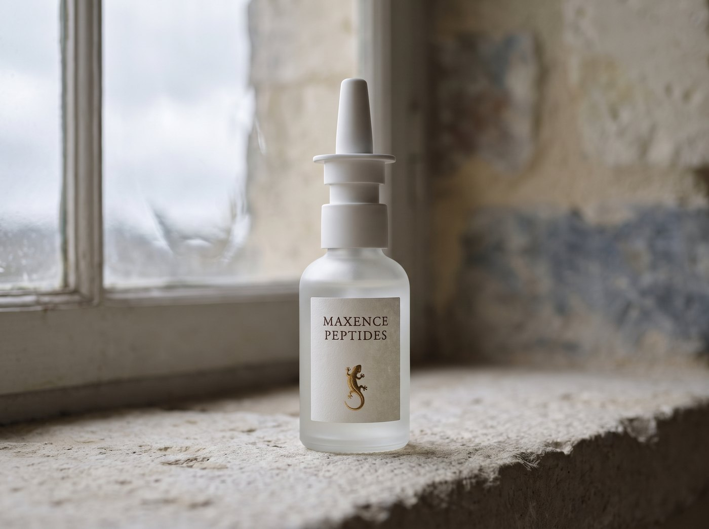

Beauté
PT-141
Bremelanotide, peptide de recherche sur la libido.
Fiche éditoriale du PT-141. Les données commerciales Maxence sont en cours de validation.
Le parcours de commande peut être simulé avec les prix fournisseur courants. Aucun paiement, aucune réservation de stock et aucun envoi réel ne sont déclenchés ; le commerce reste fermé.
Aucune promesse de prix, de lot, de stock ou de livraison n’est publiée.
Aucun certificat Maxence n’est publié pour cette référence. Les données héritées d’un autre catalogue ont été retirées.